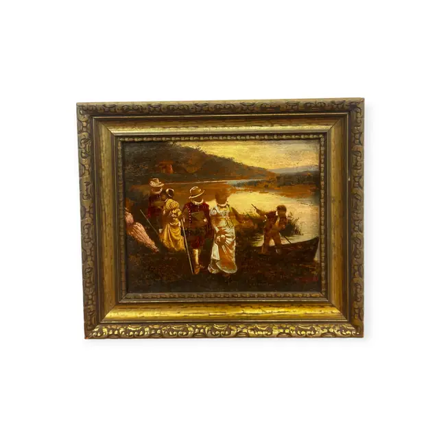
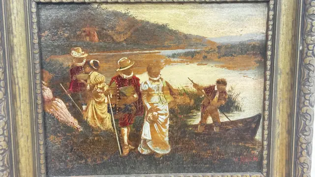
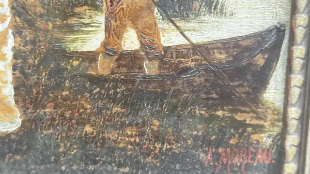
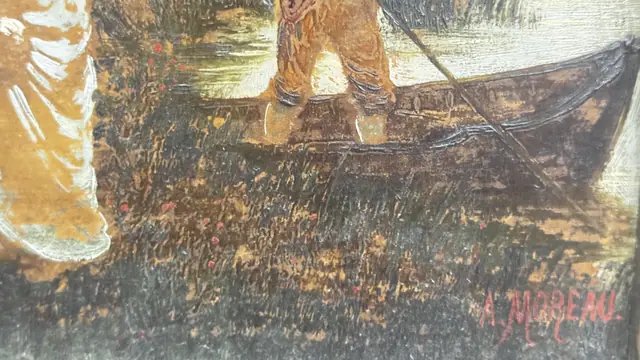
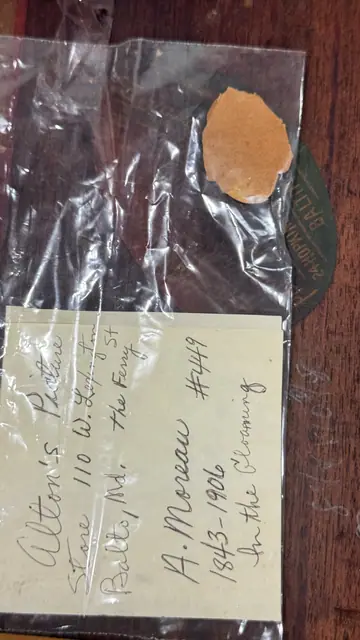

Paintings & Prints
In the Clearing, Figures by a River, A. Moreau, Signed, Framed
A. Moreau · late 19th century
Price Upon Request





About the Item
A. Moreau. A small, jewel-like river scene painted with a loaded brush. A group of figures in cream, wine and grey stand on the near bank, parasol raised, while a boatman in tall boots poles a dark punt through the shallows. Hills recede into a warm amber sky. The impasto is heavy in the foliage and water, giving the panel a glittering surface. Set in a deep gilt composition frame with a beaded inner edge. Medium: oil on panel. Signed lower right, in red, reading "A. MOREAU". Inscribed on the reverse or mount: Alton's Picture Store, 110 W. Lexington St, Balto, Md.; A. Moreau #449; 1843-1906; In the Clearing. Condition: no visible damage; heavy varnish gloss.
Details
- Creator:
- A. Moreau
- Creation Year:
- late 19th century
- Medium:
- oil on panel
- Period:
- 19Th
- Condition:
- Offered in the condition shown in the photographs.
- Reference Number:
- VO-229
- Documentation:
- handwritten dealer label only, in a plastic sleeve with a wax seal
- Gallery Location:
- Alton's Picture Store, 110 W. Lexington St, Baltimore, Md.